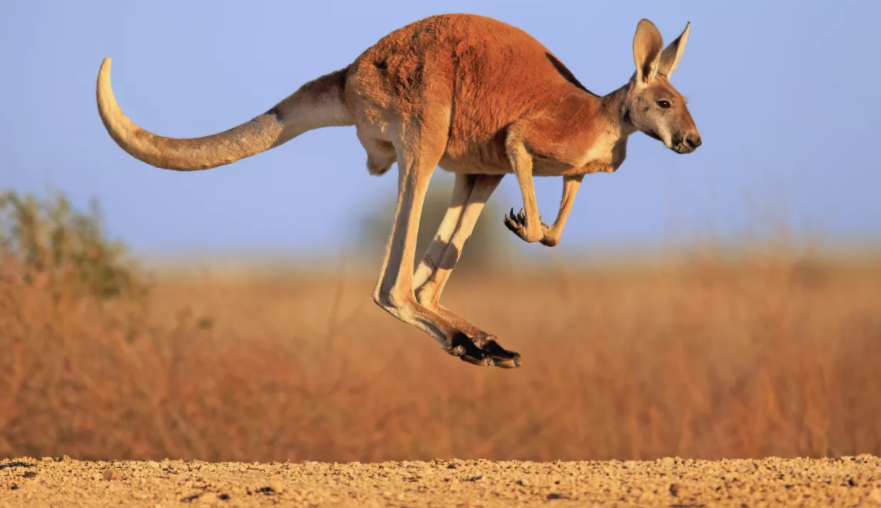

The mining and retail trade industries, two significant Australian industries, are visualised on this webpage.Mining is the Primary industry, and retail is the tertiary industry. We want to show how these industries have evolved over time and identify the one that has the most impact on the Australian economy.
The above map displays the amount of revenue (in millions of dollars) made by the retail trade sector in each Australian state during the previous ten years.
It is evident that both industries have prospered during these eight years. The retail trade sector, however, makes more money than the mining sector.
By contrasting each state using the bar graph above, we can see which states earn more from the retail trade sector and which states are mineral-rich, and so earns from mining industry.
The percentage of each industry's revenue in Australia's total revenue in 2020 is depicted in the pie chart above. It is clear how much of the total revenue comes from the retail sector.
This heat map displays the performance of the retail trade sector through time.The more denser the circle is the more the revenue in that particular month of particular yaer.As the years go by, a distinct trend of rising revenue can be recognised.